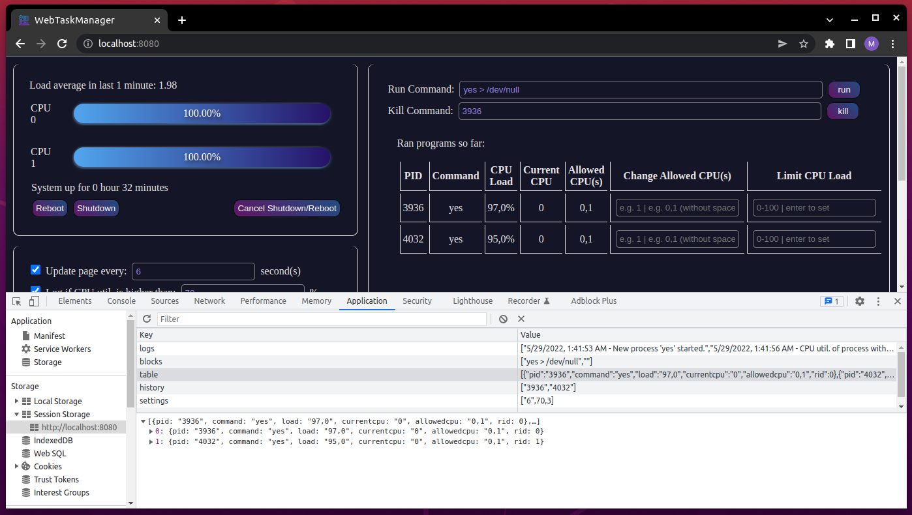

WebTaskManager
WebTaskManager ist ein einfacher Task-Manager, der in einem Webbrowser ausgeführt wird. Es ist mit HTML, CSS und JavaScript für das Frontend konzipiert und es werden keine vorgefertigten Tools oder zusätzliche Bibliotheken verwendet, alle Codes werden von Hand geschrieben. Serverseitig kommen C, C++ und eine C-Bibliothek libhttp zum Einsatz. Es ist kein zusätzlicher Download erforderlich. Externe Bibliotheksdateien und ihre Details sind in der folgenden Tabelle aufgeführt. Getestet in den Browsern Chrome und Firefox auf virtuellen Maschinen mit 2 und 4 CPUs.
Struktur der App
| Main | Frontend | |||||
|---|---|---|---|---|---|---|
| server.c | runCommand.c | updateProcess.c | limitCpuLoad.cpp | app.js | index.html | style.css |
| 457 Zeilen | 100 Zeilen | 115 Zeilen | 49 Zeilen | 635 Zeilen | 240 Zeilen | 178 Zeilen |
Die Dateien im Ordner data_files dienen dem Datenaustausch zwischen Frontend und Backend.
Einstieg
Um die Anwendung zu starten, genügt es, in der Kommandozeile „make“ einzugeben. Drücken Sie zweimal die Eingabetaste oder verwenden Sie die Tastenkombination Strg + C, um das Programm zu schließen.
Das Programm besteht aus 4 Hauptabschnitten, Systeminfo, Befehlsblock, Einstellungen und Protokolle.
Der Abschnitt Systeminfo zeigt uns den Lastdurchschnitt der letzten 1 Minute, die Lasten (%) aller CPUs und die Systemverfügbarkeit. Dieser Abschnitt enthält auch Schaltflächen zum Neustarten, Herunterfahren und Abbrechen dieser Vorgänge.
Und der zweite Teil für das gesamte Prozessmanagement. In diesem Abschnitt gibt es eine Eingabe, in der wir die Befehle zum Starten des Terminals eingeben, und eine Eingabe, in der wir diese Prozesse gemäß dem Namen oder der Prozess-ID beenden können. Darüber hinaus gibt es eine Tabelle, die Informationen zu den von uns ausgeführten Prozessen enthält und es uns ermöglicht, einige Operationen darauf auszuführen.
Die verbleibenden zwei Abschnitte ermöglichen es uns, kleinere Anpassungen an der Seite vorzunehmen und die von der Anwendung erstellten Protokolle anzuzeigen.

Systeminformationen
Durchschnittslast
Load Average-Daten werden aus der Datei /proc/loadavg ( server.c 168-182 ) gelesen und in der Datei loadavg.json im json-Datenformat mit der eingehenden Serveranforderung gespeichert. Dann liest das Frontend diese Daten und zeigt sie auf dem Bildschirm an ( app.js 183-195 ).
CPU Last
Ich habe einen Algorithmus verwendet, um die Verarbeitungslast der Kerne zu berechnen. Zuerst habe ich Daten aus der Datei /proc/stat gezogen. Diese Datei enthält einige CPU-bezogene Daten. Wir benötigen die Daten nach der ersten Zeile (server.c 108-136).

Die Daten werden dann durch Zeichenfolgenoperationen angeordnet und in einem Array aufgelistet, um Berechnungen durchzuführen. Die Bedeutung dieser Daten;
- 1. Spalte: user = normale Prozesse, die im Benutzermodus ausgeführt werden
- 2. Spalte: nice = nette Prozesse, die im Benutzermodus ausgeführt werden
- 3. Spalte: system = Prozesse, die im Kernelmodus ausgeführt werden
- 4. Spalte : idle = Däumchen drehen
- 5. Spalte: iowait = warten auf Abschluss der E/A
- 6. Spalte: irq = Interrupts bedienen
- 7. Spalte: Softirq = Softirqs bedienen
Für die Berechnung wird folgende Berechnung im Double-Datentyp verwendet ( server.c 149-166):
u = user + system
t = user + system + idle
Dann wird 1 Sekunde gewartet und die Änderungen dieser Daten gemessen.
(u1-u0) * 100 / (t1- t0)
Die resultierenden Daten zeigen die CPU-Last.
Kontrolltests dieser Daten wurden mit gnome-system-monitor durchgeführt und die resultierenden Daten sind gleich.
Dieser Vorgang wird für jede CPU durchgeführt und in der Datei load.json als json-Array gespeichert. Das erste Element dieses Arrays ist die Anzahl der Prozessoren, die mit dem Befehl „nproc“ empfangen werden. Die Antwort auf die eingehende Ajax-HTTP-Anforderung wird vom Frontend aktualisiert und gelesen und auf dem Bildschirm angezeigt ( app.js 98-123 ).
Warum habe ich mich entschieden, zu Beginn dieser Berechnung 1 Sekunde zu warten?
Da der Server auf unserem Gerät läuft, nutzt er die Ressourcen unseres Systems. Dies bedeutet, dass viele Serveranforderungen für viele auf dem Bildschirm aktualisierte Daten zusammen mit der CPU-Auslastung gesendet werden. Als Ergebnis dieser Situation zeigt es einen höheren Wert als es sein sollte, da die CPU-Auslastung sofort ansteigt. Deshalb hielt ich es für angebracht, am Anfang eine Sekunde zu warten.
System Buttons
Reboot ( server.c 299-308 ), Shutdown ( server.c 308-318 buttons send a request and these requests trigger the commands between the lines specified.

Die Schaltflächen Reboot ( server.c 299-308 ), Shutdown ( server.c 308-318 ) senden eine Anfrage und diese Anfragen lösen die Befehle zwischen den angegebenen Zeilen aus.
Die Schaltfläche Abbrechen ( server.c 318-321 ) löst den Befehl "shutdown -c" aus.
Abschnitt Befehlsblock
Run command
Das Absenden dieses Formulars sendet eine Anfrage an den Server und sendet den Eingabewert als Parameter. Die Datei server.c dekodiert diesen Parameter, übergibt ihn an die Datei runCommand und führt ihn aus ( server.c 321-331 ). Gleichzeitig wird die ID des laufenden Prozesses an die Datei pinfo.txt gesendet, bevor er an die Datei runCommand ausgeführt wird. „runCommand“ liest diese Informationen und führt einige Funktionen aus, um den Namen des Befehls, die Auslastung des Prozesses und die zulässigen CPUs davon zu erhalten. Dies ist der erste Schritt beim Erstellen der Tabelle. Diese Daten werden kompiliert und im JSON-Format ( runCommand.c 92-100 ) in die Datei processinfo.json geschrieben. Mit diesen ersten Daten wird die Tabellenzeile generiert und auf dem Bildschirm angezeigt ( app.js 284-332 ).
Kill Command
Der Prozess der Beendigung einer Transaktion ist recht einfach. Zunächst wird beim Absenden des Formulars geprüft, ob der Wert eine Zahl ist und dementsprechend ein anderer Ajax-HTTP-Request gesendet ( app.js 153-206 ). Das Backend verwendet die pkill-Methode, wenn es eine Kill-Anforderung mit Namen erhält, ansonsten verwendet es einige C-Funktionen ( server.c 331-339 ).
Tipp: Sie können es automatisch an das Kill-Befehlsformular weiterleiten lassen, indem Sie in der Tabelle auf die ID eines Prozesses doppelklicken.

Aktualisierung der Tabelle
Moderne Browser stellen uns lokale Speicher- und Sitzungsspeicherfunktionen zur Verfügung, die wir als lokale Datenbank verwenden können, Daten im lokalen Speicher werden aufbewahrt, bis der Browserverlauf gelöscht wird, und Daten im Sitzungsspeicher werden aufbewahrt, bis der Browser geschlossen wird. Aus diesem Grund habe ich in diesem Projekt einige Male Session Storage verwendet.
Um den Eingabewert nicht zu verlieren, wenn die Seite in den Abschnitten Run Command, Kill Command, Logs und Settings aktualisiert wird, habe ich ihn in der lokalen Datenbank gespeichert.
Wenn die Einstellung „Seite aktualisieren“ im Abschnitt „Einstellungen“ aktiviert ist, werden die CPU-Auslastung, die durchschnittliche Auslastung, die Betriebszeit, die Protokolle und der Tabellenteil im ausgewählten Zeitraum aktualisiert. Und die erforderlichen Daten werden aus der lokalen Datenbank abgerufen. Aber diese Phase erfordert einige zusätzliche Backend-Fortschritte. Zunächst wird die Transaktions-ID als Parameter mit der Anfrage gesendet. Diese ID wird in updateProcess behandelt und durchläuft fast die gleichen Phasen wie runCommand. Durch Abrufen der resultierenden Daten aus der Datei „updatedinfo.json“ werden sie dann im Tabellenarray im Sitzungsspeicher aktualisiert. Es wird auf dem Bildschirm angezeigt, wenn die Seite aktualisiert wird.
Wie erhalten runCommand- und updateProcess-Dateien die erforderlichen Daten?
Die Datei "/proc/<pid>/comm" wird gelesen, um den Namen des Befehls zu erhalten. Für die CPU-Auslastung des Prozesses wird der Befehl "top -b -n 2 -d 1 -p %d | tail -1 | awk '{print $9}' > "./data_files/load.txt" ausgeführt und dann der Wert Um die vom Prozess aktiv verwendete CPU zu sehen, muss der Befehl "ps -o psr -p <pid> > ./data_files/psr.txt“ wird ausgeführt und Daten werden aus der erforderlichen Datei gezogen, und die gleichen Prozesse listen auch die CPU auf, zu deren Verwendung der Prozess berechtigt ist. Dieses Mal wird der Befehl „taskset -pc <pid> > ./data_files/allowedcpus.txt“ verwendet.
Wie ändere ich die CPU-Last und die aktive CPU?
Um die CPU-Auslastung eines Prozesses zu begrenzen, reicht es aus, in der erforderlichen Eingabe in der Tabelle einen Wert zwischen 0 und 100 einzugeben und die Eingabetaste zu drücken. Dann wird eine Anfrage an den Server gesendet und die Datei limitCPULoad ausgeführt ( server.c 375-393 ).
Diese Datei wandelt die Planungsrichtlinie des Prozesses in sched_deadline um und fügt der Einschränkung einige zusätzliche Schritte hinzu.
Ein ähnlicher obiger Prozess wird verwendet, um die aktive CPU zu ändern. Nachdem Sie die Daten gesendet haben, wird diese Anfrage im Backend verarbeitet und zunächst die Scheduling Policy mit sched_other mit dem Befehl „sudo chrt -o -p 0 <pid>“ aktualisiert. Dann der Befehl "taskset -pc <affinity> <pid>" ausgeführt und der Prozess abgeschlossen ( server.c 349-375 ).
Hinweis: Wenn Sie diese Vorgänge zum ersten Mal ausführen, vergessen Sie nicht, das Passwort einzugeben, um die Root-Berechtigung vom Terminalbildschirm aus zu erteilen.